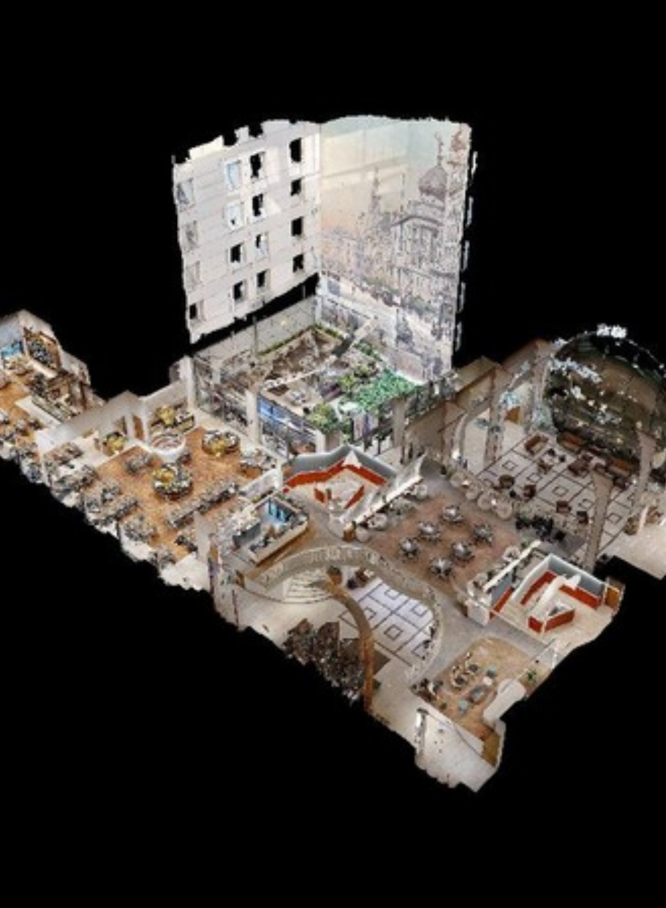
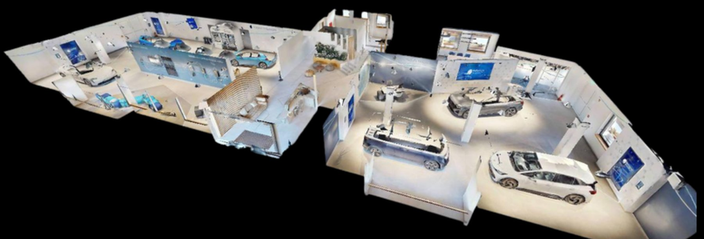
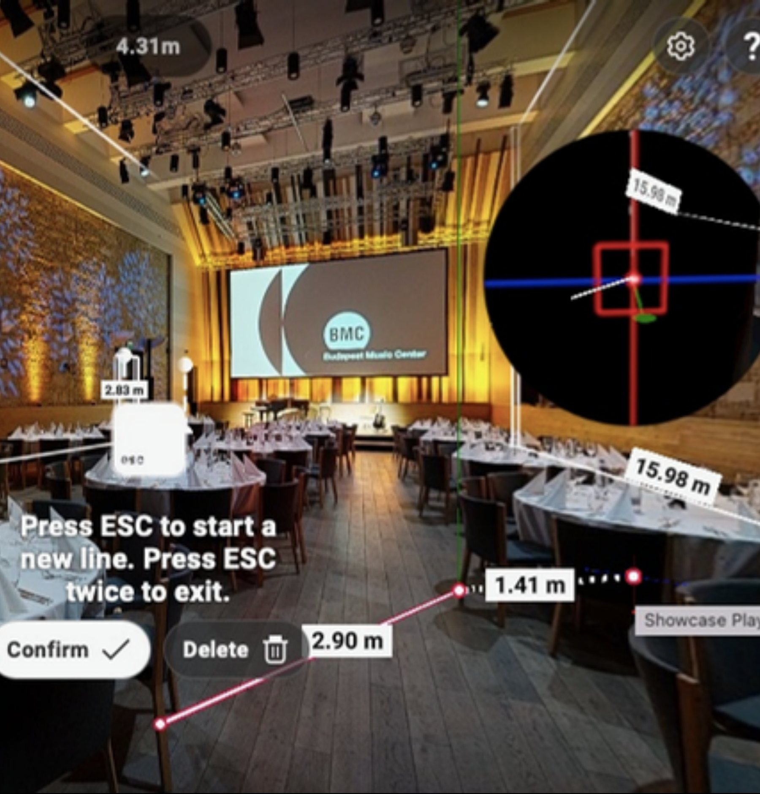
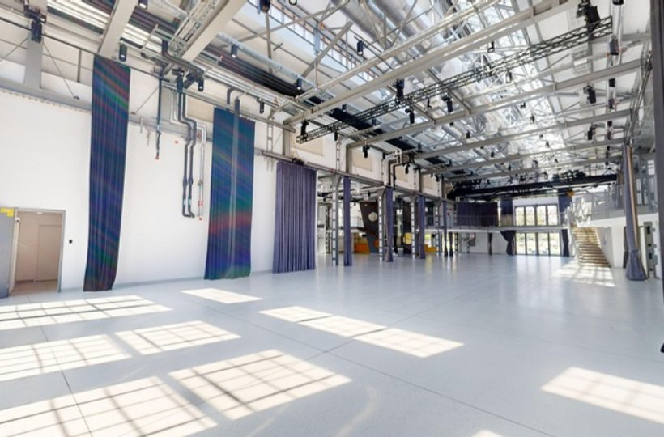
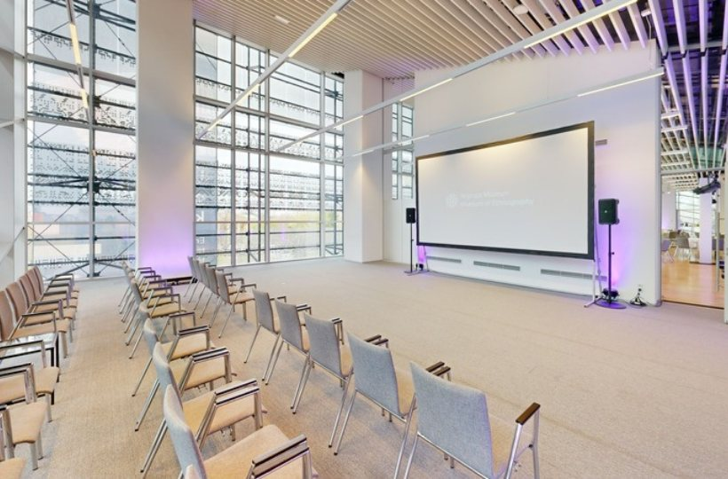
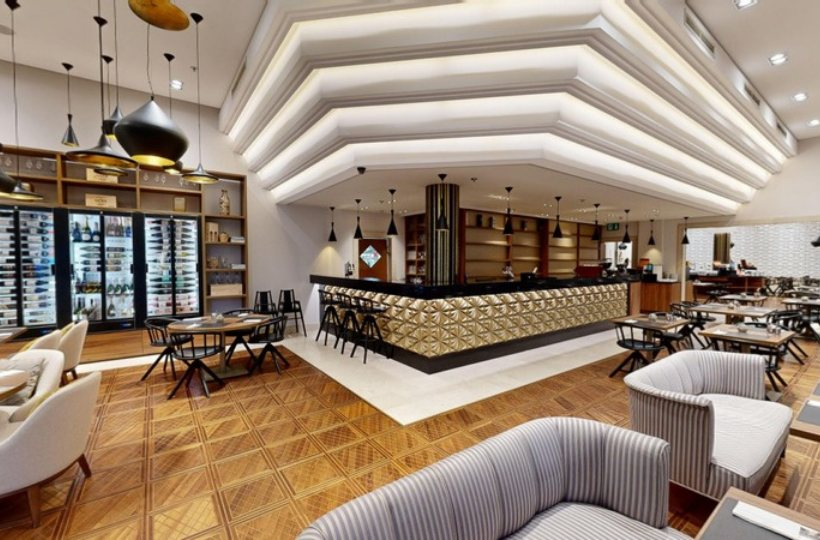
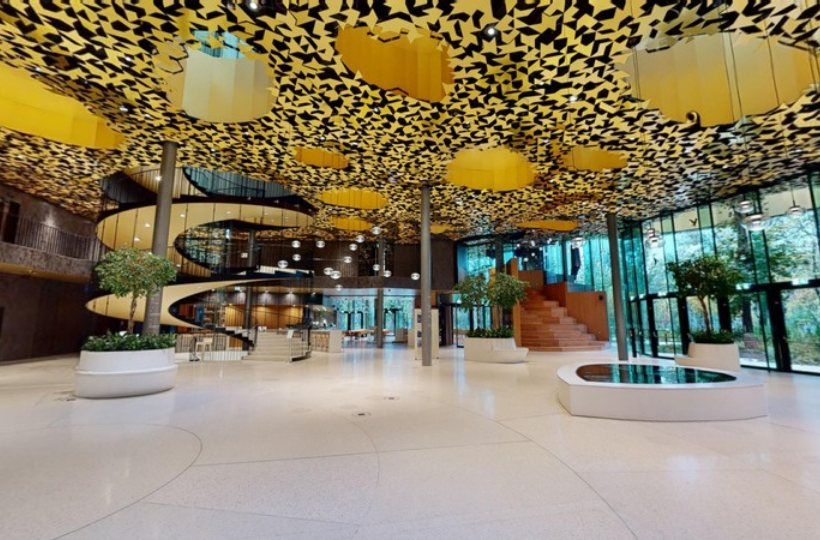
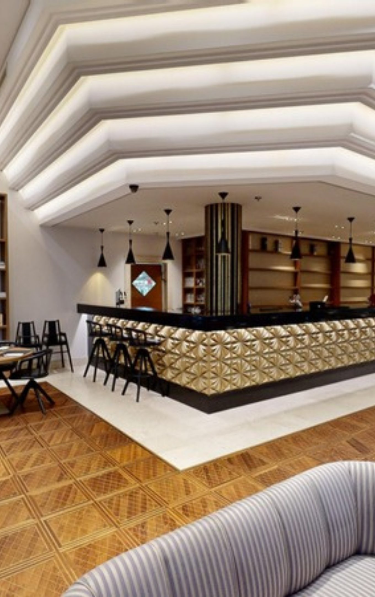
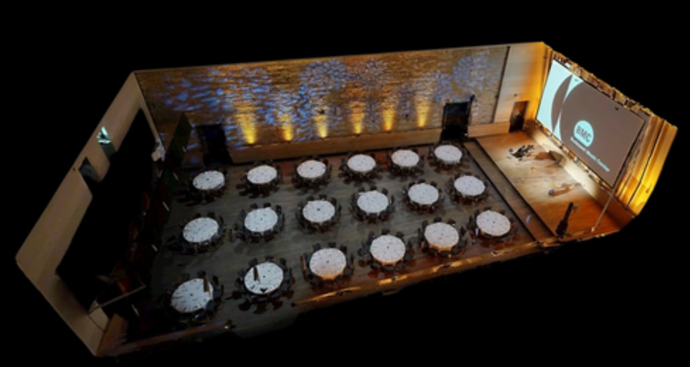
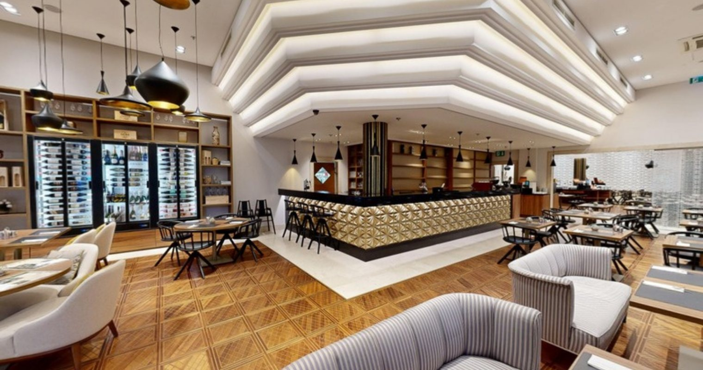

Hány bejárás kell
egy foglaláshoz?
Térdigitalizáció MICE-helyszíneknek: konferencia, céges rendezvény, incentive. Rendezvényhelyszínek, szállodák, éttermek.
A foglalási döntés a bejárás előtt kezdődik
Egy konferencia vagy céges rendezvény szervezője fotók és alaprajz alapján ritkán érti meg igazán a teret. Ezért kérdez, egyeztet és bejárást kér.
A szervező kihívásai ma
Az európai szervezők 36%-a a költségkerettel, 31%-a az időbeosztással küzd (Cvent, 2025).
A helyszínkeresés online kezdődik, és a legnehezebb távolról megérteni, hogyan működik a tér az ő eseményükre.

Ami ma történik
- Fotók és alaprajz, majd pótlólagos kérdések.
- Hosszú e-mail-váltások, majd személyes bejárás.
- Sok bejárásból végül nem lesz foglalás.
A rejtett költség: az értékesítő és a rendezvényes kolléga ideje, valamint a lassabb döntés.

Mit akar látni a szervező?
Plénáris terem és szekciótermek, regisztráció, kávészünet, kiállítói standok, technika: elfér-e, és hogyan mozognak a résztvevők.
Az észak-amerikai szervezők 49%-a több időt tölt a terek online átnézésével, 31%-uk a 3D bejárást a helyszínválasztás egyik fő szempontjának tartja.
Cvent, 2025

Térdigitalizáció
A helyszín valósághű, bejárható digitális mása
- Egy linken bárhonnan megnyitható, mobilon is.
- Kattintható információk: befogadóképesség, technikai adatok, letölthető anyagok.
- Használható ajánlatban, online egyeztetésen, a weboldalon és a Google-profilon.
Mit változtat üzletileg?
Akkor segít, amikor a szervező még nem járt a helyszínen, de már döntenie kell.
Felkészültebb érdeklődők: aki ajánlatot kér, már látta a teret.
Kevesebb felesleges bejárás: személyesen a komoly érdeklődő jön, külföldről is.
Gyorsabb döntés: a szervező továbbküldheti ügyfelének, kollégáinak.
MICE: a döntés több emberen múlik
Konferencia, céges rendezvény, incentive: a szervező, az ügyfele és a technikai csapat is látni akarja a helyszínt.
Az ajánlat mellé
Az észak-amerikai szervezők 17%-a szerint a 3D bejárás javítana leginkább a helyszín-ajánlatokon (Cvent, 2025). A link az ajánlat része lehet.
A szemle előtt
A szervező előre szűr: személyes szemle csak a komolyan szóba jövő helyszínekre.
A végső döntéshozónak
Az ügynökség továbbküldi a céges megrendelőnek, aki így utazás nélkül is jóváhagyhatja a helyszínt.
A tervezéshez
Színpad, kiállítói standok, technika: méretek és alaprajz a rendezvénytechnikának.
A résztvevőknek
QR-kód a regisztrációs anyagban: a vendégek előre körülnézhetnek a helyszínen.
Nemzetközi szervezőknek
Többnyelvű bejárás azoknak, akik csak a döntés után utaznak Magyarországra.
Európában is így látják: a szervezők 43%-a online fotók és videók, 42%-a alaprajzok alapján ítéli meg a helyszínt (Cvent, 2025; 600+ szervező, UK és öt EU-ország).
Nemzetközi tapasztalatok
Nemzetközi szállodák és rendezvényhelyszínek már így értékesítenek.
Lindner Hotels (30+ szálloda): 25%-kal több online aktivitás, minőségibb érdeklődők.
The Ivy Collection: 50 különterem digitalizálva, kevesebb személyes bemutató.
Allseated ügyfelei: 30%-os értékesítésnövekedés, terv hetek helyett 3-4 nap alatt.
Google-felmérés: virtuális sétával kétszer nagyobb az érdeklődés.
Forrás: Matterport- és Cvent-esettanulmányok, Google (2015).
Hazai referenciáink
Rendezvénytermek, szállodák és kulturális rendezvényterek a NEXUS360 3D bejárásaiból

Bejárás
Bejárás
Bejárás
BejárásContinental Hotel Budapest, Millenáris, Magyar Zene Háza, Néprajzi Múzeum, Gundel, Foton, VakVarjú éttermek, Mooncity, Budapest Music Center, Halászbástya Étterem
Amit az ügyfeleink mondanak
„A NEXUS360 segítségével készült bemutató lehetővé tette számunkra, hogy a potenciális vendégek egy interaktív, lenyűgöző élmény keretében fedezhessék fel a szálloda és az étterem helyszíneit, beleértve a megújult konferenciatermeket is. A 3D-s bejárás nem csupán látványos, de rendkívül praktikus is; könnyedén megoszthatom partnereinkkel, így ők maguk is bejárhatják a helyszínt. […] Kiemelkedő volt a partner segítőkész és rugalmas hozzáállása.”

Rendezvényhelyszínek
A szervező a döntés előtt látja, mit kap

- Termek és elrendezésekBankett-, színházi vagy koktélelrendezés megmutatható anélkül, hogy minden érdeklődőnek át kellene rendezni a termet.
- Kiszolgáló terek és megközelítésRegisztráció, rakodás, akadálymentesség és a terek kapcsolata egy helyen, az ajánlathoz csatolva.
- Különleges helyszínekKastélyok, birtokok, pincészetek: nehezebben megközelíthetők, ezért a távoli bejárás itt különösen sokat segít.
Szállodák: rendezvény és még több
Egy felmérés, több üzleti cél

- RendezvénytermekKonferencia- és rendezvénytermek, szekciótermek: ez a kiindulópont, a MICE-értékesítés támogatása.
- Új területekLobby, kávézó és étterem, közösségi terek, terasz és szobatípusok: a teljes vendégélmény megmutatható foglalás előtt.
- Többnyelvű bejárás2025-ben közel 10 millió külföldi vendég szállt meg a hazai szálláshelyeken (KSH). Nekik a digitális bejárás gyakran az első találkozás a helyszínnel.
Éttermek: különterem és vendégélmény
Kevesebb kérdés és helyszíni szemle a nagyobb foglalások előtt
- Különterem és rendezvényekCéges vacsorák, csoportos és magánrendezvények: a szervező előre látja a különtermet és a teljes vendégteret.
- Plusz ok: a hangulatAz átlagos vendég is körülnézhet asztalfoglalás előtt, a weboldalon vagy a Google-profilon.
- Menü és foglalási linkekMenü, kapacitás és foglalási link helyezhető el közvetlenül a bejárásban.
Hogyan dolgozunk?
Partnerként dolgozunk: a tartalmat (szöveg, menü, fotó) a helyszín adja, mi elhelyezzük és gondozzuk, a bevezetést pedig közösen végezzük.
Felmérés
a helyszín és a valódi felhasználási cél megértése, majd 3D szkennelés.
Feldolgozás
rendezett kezdőnézet, szintek, helyiségek, információs pontok.
Közös bevezetés
partnerként végigvesszük a kollégákkal, hogyan használják a napi munkában.
Gondozás
tartalomfrissítés, alaprajz, Google Street View, drónfelvétel, többnyelvűség.
Mérhetőség és téradatok
Nem csak látvány: adat a döntéshez és a tervezéshez.
Mérhetőség
- Külön link vagy QR-kód csatornánként és kampányonként: weboldal, ajánlat, hírlevél, MICE-esemény, kiállítás.
- Látszik, honnan érkeznek a megtekintések, és melyik csatorna hoz érdeklődőt.
- A megtekintési adatok a platform elérhető analitikája szerint követhetők.
Téradatok
- A bejárásban méretek vehetők fel: elfér-e a színpad, a stánd, a berendezés.
- 2D alaprajz az ajánlathoz és a berendezési tervhez.
- Igény szerint pontfelhő és tervezési adatcsomag a rendezvénytechnikának, építésznek.
Egyszerű használat, bárhol
Felhőben fut
Nem foglal tárhelyet, és nem lassítja a weboldalt: a bejárás külső felhőből töltődik be.
Minden eszközön
Telefonon, tableten és számítógépen is működik, böngészőből, alkalmazás letöltése nélkül.
Egy linken megosztható
Ajánlatban, e-mailben, online egyeztetésen, weboldalon és Google-profilon is.
QR-kód eseményeken
MICE-eseményen, szakkiállításon, nyomtatott anyagon: a látogató a telefonjával azonnal belép a helyszínre.
Külön linkek, mérhetően
Minden csatorna és kampány saját linket vagy QR-kódot kaphat, így látszik, mi működik.
Mindig friss
Menü, elrendezés, ajánlat változik? Az információs pontokat partnerként frissítjük.
Gyakori kérdések
Mennyire zavarja a felmérés a működést?
Előre egyeztetett időpontban, akár nyitvatartáson kívül dolgozunk. Az időtartam a helyszín méretétől függ.
Mi történik, ha átrendezzük a termet?
Az információs pontok (menü, kapacitás, linkek) bármikor frissíthetők. Nagyobb átépítésnél a teret is újra felmérjük.
Nem veszi el a kedvet a személyes látogatástól?
Nem helyettesíti a bejárást, hanem előszűr: személyesen az jön, aki már komolyan érdeklődik.
Be kell építeni a weboldalunkba?
Nem feltétel. Linkként és QR-kódként is működik: ajánlatban, e-mailben, eseményen, a Google-profilon.
Gyakori kérdések
Ki kezeli nálunk? Bonyolult?
Partnerként közösen vezetjük be a kollégákkal, a saját feladataikra szabva. A napi használat egy link vagy QR-kód megosztása.
Ki adja a szöveget, a menüt, a fotókat?
A tartalmat a helyszín adja, mi elhelyezzük a bejárásban és gondozzuk.
Mi kerül bele, és mi marad ki?
Előre egyeztetjük, mely terek kerülnek a bejárásba. A belső, nem nyilvános helyiségek kimaradhatnak.
Mennyibe kerül?
Egyszeri kialakítási díj és rendszeres tárhelydíj. A pontos összeg a helyszín méretétől és a kért tartalmaktól függ, ezt az ajánlat rögzíti.
Önöknek érdemes? Ha kettőre igaz, beszéljünk.
Sok érdeklődő kér bejárást, de kevés foglal?
Rendszeresen kapnak konferencia-, céges vagy incentive-megkeresést, akár távoli szervezőktől?
Több terem vagy elrendezés van, esetleg különleges, nehezen elérhető a helyszín?
Következő lépés: 15 perces online bemutató
Olvassa be a QR-kódot a telefonjával.